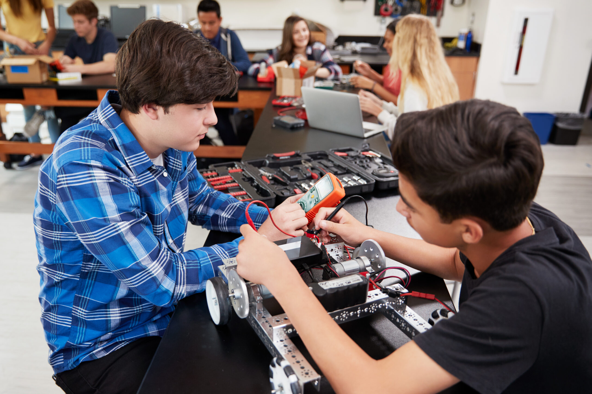

|
Grow. Create. Lead.
Four after-school tracks for grades 6–12—two in Biology and two in AI & Technology.
Weekday live sessions + weekend labs + capstone projects.
Middle School builds curiosity and confidence. High School prepares students for college and careers.
Seats are limited for fall & spring blocks.
See all programs
|

Middle School Biology Fundamentals Academy
Life science basics, DNA, ecosystems, and health—delivered through fun labs and a final project. |

Middle School AI & Technology Fundamentals Academy
Scratch, ML-style games, robotics, and smart digital citizenship. Create and iterate with peers. |

High School Biology Track
Molecular biology, genomics, CRISPR, and precision medicine—serious prep for biotech pathways. |
|

High School AI & Technology Track
Python, ML, computer vision, robotics, and software practices—portfolio-ready projects included. |
| pathwaybiomedx.org |